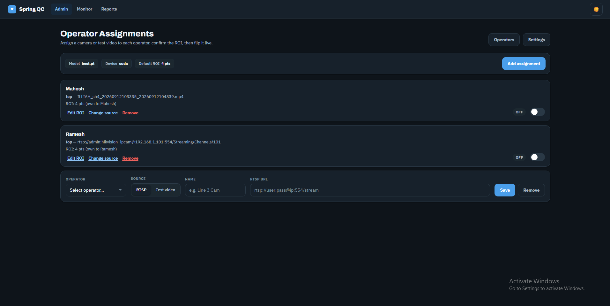
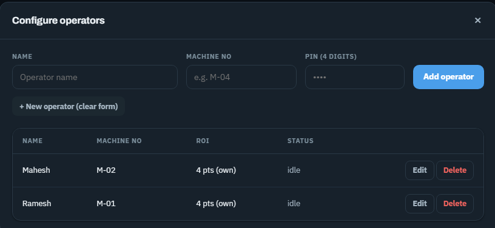
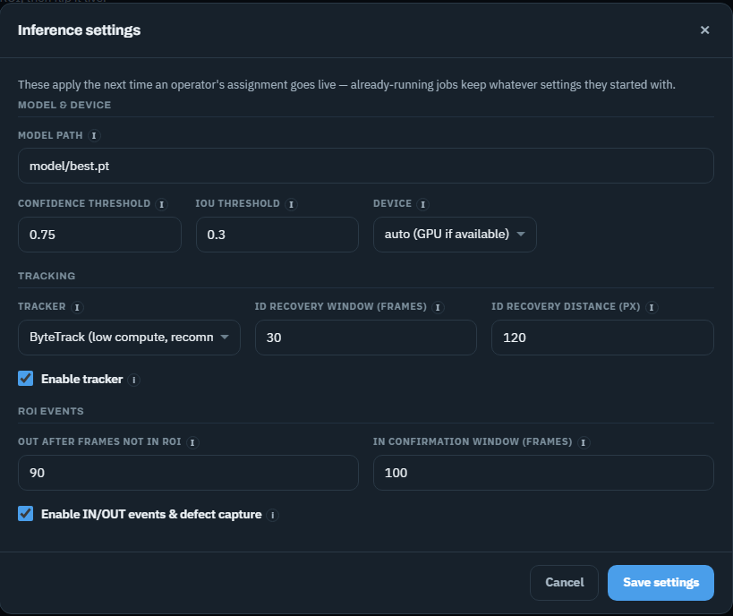
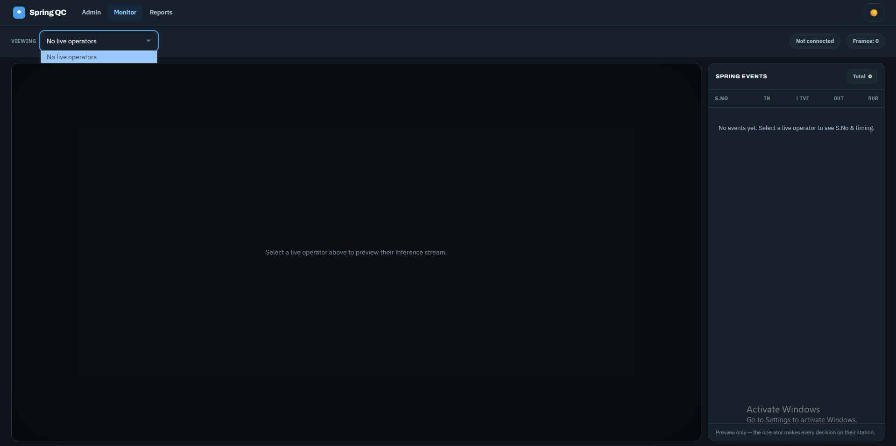
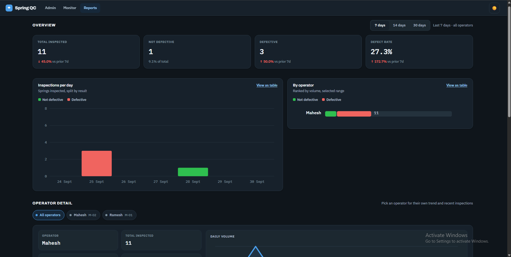
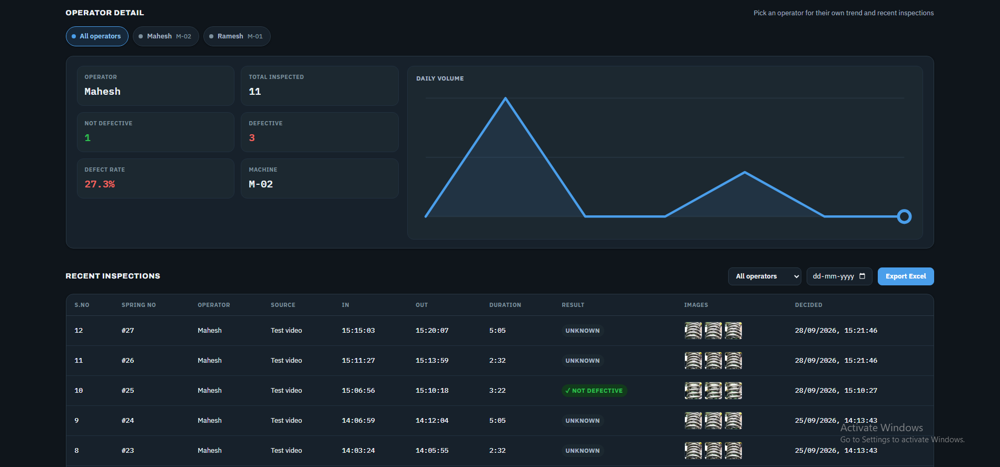
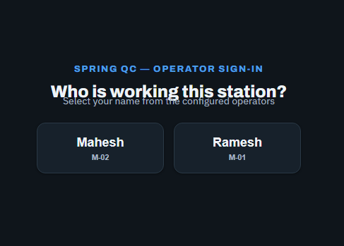
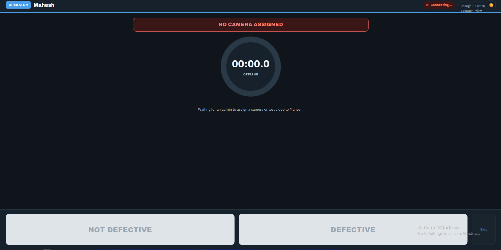

Spring QC watches your production line through a camera, automatically detects each spring as it passes, and gives the operator a clear photo record to approve or reject — every decision logged, timestamped, and searchable later.
On a spring manufacturing line, springs move past an inspection point continuously and defects are easy to miss under manual-only visual checks — especially over long shifts. Spring QC adds an AI "second pair of eyes" that never gets tired: it watches the camera feed, recognizes when a spring enters and leaves the inspection zone, captures clean images of it, and hands those images to the operator to make the final call. Nothing is auto-rejected without a human decision — the software assists, the operator decides.
Everything is recorded automatically as it happens — no paperwork, no manual counting. Supervisors can watch any live station remotely, and full reports (with photos) can be exported to Excel for any date range at any time.
The Admin dashboard is where a supervisor connects cameras to operators, draws the inspection zone, and controls when a station goes live.

Operator Assignments — each operator is linked to a camera (RTSP) or a recorded test video, with its own inspection zone (ROI) and a Live / Off switch.

Adding an operator — name, machine number, and a 4-digit PIN for sign-in. Existing operators are listed with status at a glance.

Inference settings — detection confidence, tracking behaviour, and timing rules can be tuned per site, each with a plain-language tooltip.
Supervisors can watch any operator's live inspection feed from their own desk — without interrupting the operator's own decision-making. This is a view-only window: the operator on the floor always makes the actual accept/reject call.

Monitor screen — pick any live operator from the dropdown to preview their camera feed and see spring events (IN / OUT / duration) land in real time.
This is especially useful for a floor supervisor managing several lines at once, or for spot-checking a station remotely instead of walking the floor every time.
Every inspection decision is stored permanently, with its photos, timestamps, and the operator who made the call. The Reports section turns that history into numbers management can actually use.

Reports overview — total inspected, defect rate, and day-by-day / operator-by-operator trends, with a quick 7/14/30-day toggle.

Per-operator detail and a searchable inspection log — every spring, with its captured photos, decision, and timing, filterable by date and exportable straight to Excel.
Deliberately kept simple: no keyboard, no menus to learn — an operator's entire shift happens through two screens.

Sign-in — tap your name, enter your PIN. Takes seconds, no typing a username.

Inspection station — large, touch-friendly Not Defective / Defective / Skip buttons appear as each spring's photos are ready for review.
This screen is designed to be usable on a factory floor: large touch targets, high contrast for varied lighting, and a live "waiting for admin to assign a camera" state so an idle station is never confusing — it always tells the operator exactly what's happening.
| Item | Detail |
|---|---|
| Detection model | YOLO (custom-trained on spring imagery), configurable model file per site |
| Tracking | ByteTrack — keeps a consistent identity for each spring as it moves through frame |
| Acceleration | GPU (NVIDIA CUDA) with automatic fallback to CPU if no GPU is present |
| Camera input | RTSP network cameras, or a pre-recorded video file for testing/training |
| Tunable parameters | Confidence threshold, IoU threshold, ROI dwell time, ID-recovery window/distance — all adjustable from the Admin UI, no code changes |
| Item | Detail |
|---|---|
| Architecture | One on-site workstation (with GPU) runs the detection/API/database as a background service; every other PC connects with a plain web browser over the local network |
| Client requirement | None — a desktop shortcut opens the relevant page in whatever browser is already installed; no software to install on operator/admin PCs |
| Always-on operation | Runs as a Windows Service — starts automatically on boot, keeps inferencing with nobody logged in |
| Database | PostgreSQL — stores every operator, assignment, and inspection record with captured images |
| Network | Runs entirely on the plant's local network — no internet connection required for daily operation |
| Data export | Excel export with embedded images, filterable by date range / operator / result |
Only one machine needs the GPU and the install — everyone else just needs a browser, which every plant PC already has. This keeps rollout simple (one install, many desktop icons) and keeps the inspection service running independently of whether any particular screen is open or closed.
A typical rollout: the server software is installed once on a workstation with a GPU; the admin adds operators and assigns cameras with a few clicks; each operator/admin PC gets a one-time desktop shortcut; and the line is inspecting within the same day. No specialised IT infrastructure or ongoing internet connection is required.